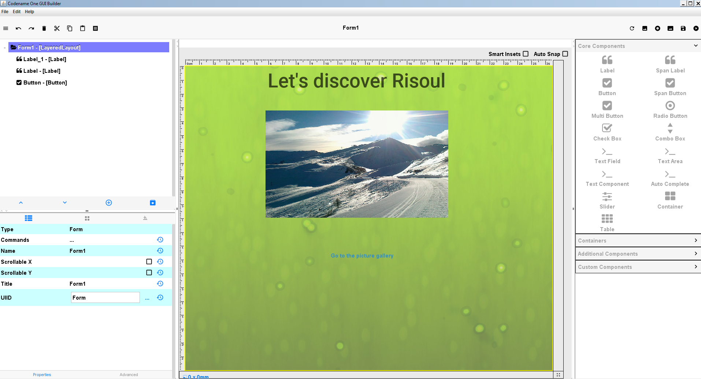
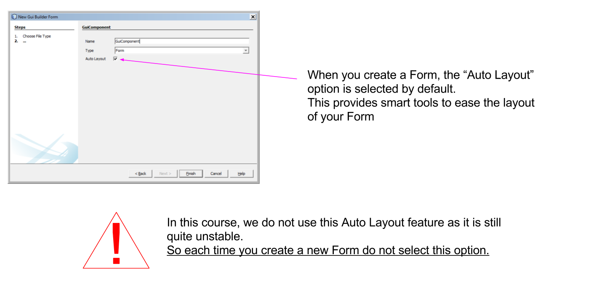
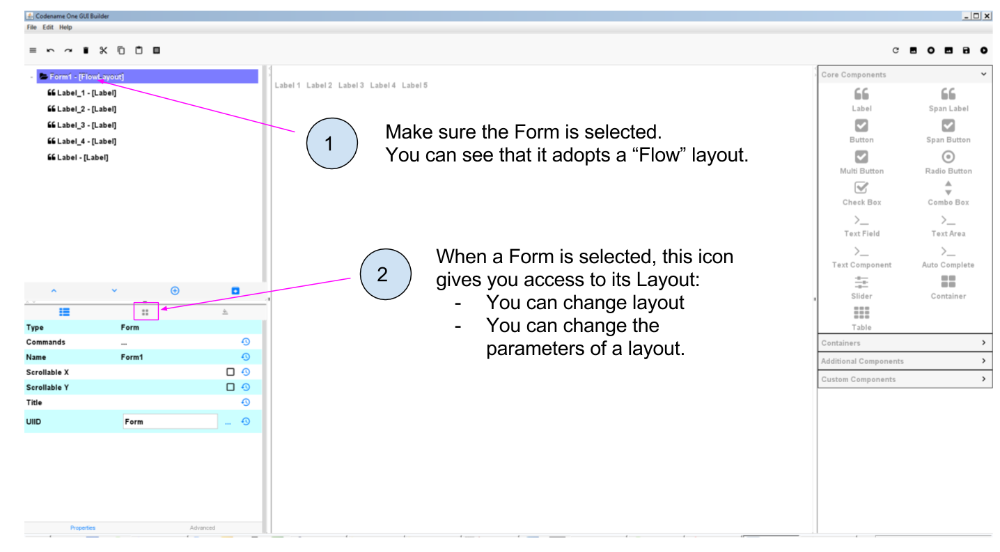
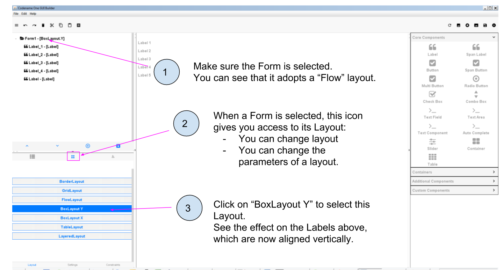
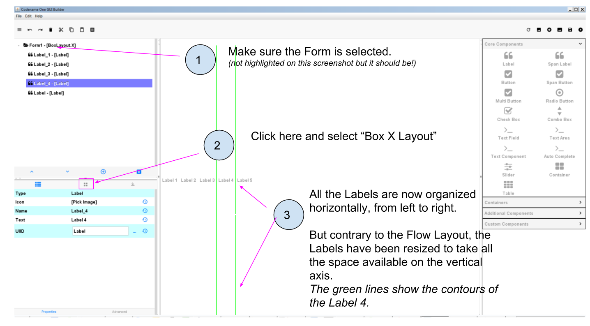
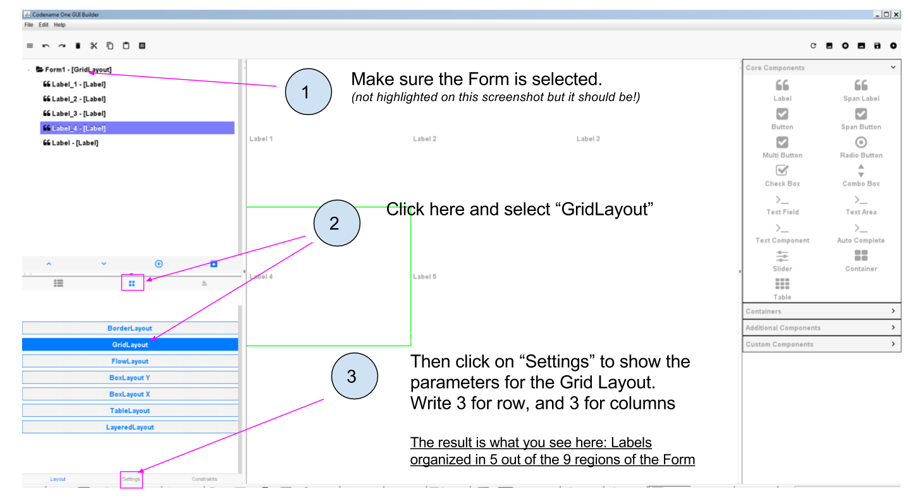
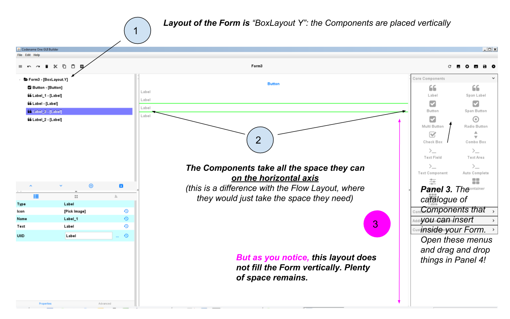

public void start() {
if(current != null){
current.show();
return;
}
Form hi = new Form("Hi World", BoxLayout.y()); (1)
hi.add(new Label("Hi World"));
hi.show();
}CODAPPS
Using layouts
last modified: 2018-03-03
'Escape' or 'o' to see all sides, F11 for full screen, 's' for speaker notes
1. Organizing things on screen: why is it an issue?
So far, we have learned how to put Labels and Buttons onto a Form. But things are pretty disorganized on the screen.
See what happens when we create an empty Form, and put 5 Labels on it:

Figure 1. Putting 5 Labels on an empty Form
I delete the title of the Form (which is "Form1" by default):

Figure 2. Deleting the title of the Form
Make sure to save the GUI Builder (File → Save), you can keep it open. Then launch the preview of the app (big green arrow  in NetBeans):
in NetBeans):

Figure 3. Previewing your app with the default layout
We see that by default, the Components are organized from left to right on the screen. When there is no more space on the line, the next Components is placed on the line below.
What if we would have preferred to organize the Labels from top to bottom? Or in a mozaic?
The concepts of Container and Layout are there to provide you with the capacity to organize Components differently, exactly as you want.
These concepts are not specific to the plugin we use in NetBeans. Pretty much every web or mobile framework use them, or their equivalent.
Before we start explaining what are Containers, Layouts and how they work, let’s just answer a question you might have:
Why not just drag and drop Components where we want on the GUI Builder, and this is how the app will look like?
This is indeed tempting. But we must remember that our mobile app will be used on phones and even tablets that each have different screen sizes and pixel resolutions.
For this reason, the result we see in the GUI Builder would look different (and messy) on the screen on a small iPhone 3 and on a big Samsung from the latest generation.
Layouts and Containers have precisely been invented to solve this issue of placement of Components, in such a way that we can make sure the overall look of our app will remain stable across screen sizes and resolutions.
A little footnote: the developers of Codename One work hard at cracking this issue of making Layouts easier.
When you create a Form, you can have "AutoLayout" selected: this will smartly help you manage the layout.
But we don’t use this feature yet in this course so do not select Auto Layout when you create Forms:

Figure 4. An experimental feature to make layout easier - but dont use it yet
With these explanations made, we can discover how layouts and containers work. Let’s start with layouts:
2. Discovering layouts with the Flow layout
A Layout is a set of rules governing how Components are organized in a region of the screen.
Codename One, the tool we use in this course, provides 7 different types of Layout.
The default one is the Flow layout.
You already now th Flow layout, because when we create a new Form, the "Flow Layout" is applied to it by default:

Figure 5. Form adopt by default a Flow layout
The Flow Layout is easy to understand: when a Form is set to "Flow Layout", the Components it contains will be set from left to right, and then place on the next line when there is no more room on the screen, etc.
We also learned something there: a Layout can be applied to some very specific Components: only those which can contain other Components.
When you think of it it makes complete sense:
it would be weird to apply a Layout to a Label: since a Label cannot contain anything, it would be nonsensical to organize it in a "Flow Layout" or another Layout.
a Form is specialized in containing Components: so of course we can apply a Layout to it.
Let’s review other useful layouts:
3. The Box Y Layout
This one does this:
every Component will be organized on top of each other, vertically (along the Y axis, hence the name)
every Component will take as much space as it can horizontally.
How to apply to the Form? Simply select the Form and then spot the icon managing Layout parameters:

Figure 6. Applying a Box Y Layout to the Form
Small digression here: if you remember, when you created the project in NetBeans, a Form had been created automatically with some lines of code.
We had to delete these lines of code to make our Form visible in the app.
Let’s look again at what these lines of code where:
MyApplication.java
Even if we don’t know how to code, this line of code starts to make sense: it creates a new Form, with title "Hi World" and with a Box Y Layout.
(end of the parenthesis and let’s explore the next layout in the GUI Builder!)
4. The Box X Layout
This Layout is similar to the Box Y Layout, except that this time every Component will be placed horizontally from left to right (along the X axis), and each Component will take as much space as it can on the vertical axis (this is a difference with the Flow layout):

Figure 7. Applying a Box X Layout to the Form
5. The Grid Layout
The Grid Layout makes it possible to arrange Components on the screen as a grid (duh!), or tiles / mozaic / table if you prefer.
The logic is simple: you provide a number of columns and rows, and the space of the Form will be divided accordingly. Each Component will occupy the space of a cell in this table.
For example: 3 rows and 3 columns? 9 cells. If you have less than 9 Components, some cells will remain empty:

Figure 8. Applying a Grid Layout to the Form
6. The Border Layout
We will examine last the Border Layout, as the other layouts are interesting but also quite complex, so out of scope for this intro course (you are of course free to explore them by yourself, looking at the documentation of the plugin here.)
The logic of the Border layout is a bit different: it divides the space in the Container in a main region at the center, and 4 regions at the borders:

Figure 9. Applying a Border Layout to the Form
This layout is particularly interesting for one reason:
The Component that you will place in the "Center" region will take up all the space it can, horizontally and vertically.
Let’s examine an example. In this Form, I placed 1 Button and 4 Labels. If we choose a Box Y Layout for the Form, it remains plenty of empty space:

Figure 10. The Box Y Layout applied to the Form
Now I don’t change anything, except for the layout of the Form: I select "Border Layout"
Figure 11. Applying a Border Layout to the Form
As of January 2018, a bug in the GUI Builder will make your Components disappear if you switch the layout of the Form from Box Y to Border Layout. You should set your Form in Border Layout before placing the Components in it. Follow the treatment of this issue here. |
The Border layout is useful in the many occasions (almost always, in fact) when we need to stretch a Component of the Form to take up "the remaining space" of the screen.
There is more: what if we keep this Border Layout, but we delete all Labels and keep only the Button?

Figure 12. A single Component in the central region of a border layout
The Button takes up all the space!
The lesson is: you can use a Border layout with just some regions of it filled (the Center and North and South), or even just one region occupied (the Center one for example).
So we see that the Border Layout is not just interesting to place things up, down, left or right of a central region:
The Border Layout is a powerful layout to make a Component expand and take all the available space horizontally and vertically
Last remark on the Border layout: how to instruct a given Component to be in the South, West, North, East or Center region?

Figure 13. Selecting the position of a Component in a Border layout
We leave here the different layouts and move on to the next lesson on how to have different layouts for different regions of the Form, thanks to Containers.
The end
Questions? Want to open a discussion on this lesson? Visit the forum here (need a free Github account).
Find references for this lesson, and other lessons, here.
Licence: Creative Commons, Attribution 4.0 International (CC BY 4.0). You are free to:
copy and redistribute the material in any medium or format
Adapt — remix, transform, and build upon the material
⇒ for any purpose, even commercially.
 This course is designed by Clement Levallois.
This course is designed by Clement Levallois.
Discover my other courses in data / tech for business: http://www.clementlevallois.net
Or get in touch via Twitter: @seinecle